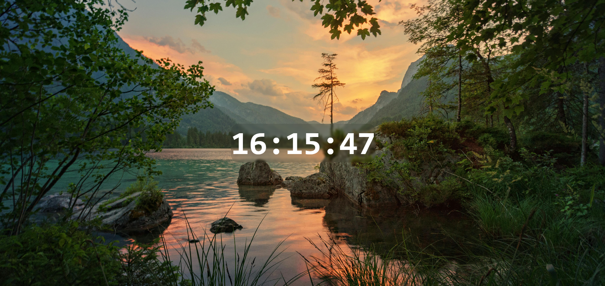

## Digital Clock
const type = "Persoonlijk Project" ;
const year = "2025" ;
const repo = " https://github.com/N-Chidiac/Digital-clock " ;
### Opdracht in één zin
> Een eenvoudige, real-time digitale klok bouwen die de huidige tijd toont en updatet elke seconde, met een clean design en customizable achtergrond – puur om te oefenen met time APIs en animaties in vanilla JS.
### Wat ik precies moest doen
// after-school project
Van scratch gebouwd: een centered clock die de exacte tijd haalt en weergeeft (uur:minuten:seconden), met auto-updates. Voegde een blur-effect toe op de achtergrond en maakte het makkelijk aanpasbaar via CSS-vars.
### Mijn aanpak & keuzes
// technische implementatie
const approach = [
"JavaScript: setInterval() voor secondelijks updaten, Date() object om tijd te fetchen en formatteren",
"CSS: Flexbox voor centering, custom background met blur-filter voor een modern, glassy effect",
"HTML: Simpel – één div voor de clock, geen overbodige elementen"
];
> Alles in < 5 files, super licht en browser-ready (open index.html en klaar).
### Geleerd & trots op
const learnings = [
"Tijd manipuleren en real-time updates zonder externe libs – precies en performant",
"CSS-filters (blur) combineren met backgrounds voor een polished look",
"Clean, minimalistische code die meteen laadt en geen batterij slurpt"
];
// performance: Trots op hoe smooth de seconden tikken – voelt als een native app-widget.
### Extraatje
> Dit was een chill avondproject: gewoon iets nuttigs maken dat altijd draait. Perfect als screensaver of desktop-tool; volgende stap: toevoegen van alarm of theming.
> "Tijd stopt niet, dus waarom zou mijn code dat wel doen? Elke seconde een reminder dat het werkt."